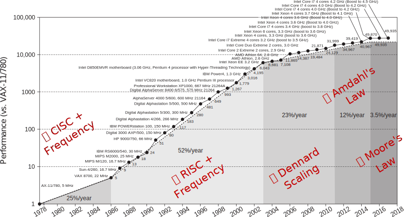

So you know those talks where the person on stage has these hopeful messages filled with positivity?
So I want to do the eastern-european version of my anscestors of that: Where a total stranger walks up
to you and tells you that everything is horrible and everything is falling apart…
And then offers you a small glimpse of hope.

From: "Computer Architecture: A Quantitative Approach, 6th Edition
So: Here is the last 40 years of single threaded performance improvemnets.
After a first happy couple of decades, at 2003, we’re start seeing an ever increasing
slowdown in this rate, even thogh transistor density has been doubling all the way
till 2015 until we reach our current time, which is the dark ages at 3.5% per year.
Now, no one knows for sure what the future holds,
But I think we can all agree that the present sucks.
Dennard observes that transistor dimensions are scaled by 30% (0.7x) every technology generation, thus reducing their area by 50%. This reduces the delay by 30% (0.7x) and therefore increases operating frequency by about 40% (1.4x). Finally, to keep the electric field constant, voltage is reduced by 30%, reducing energy by 65% and power (at 1.4x frequency) by 50%.[note 1] Therefore, in every technology generation the transistor density doubles, the circuit becomes 40% faster, and power consumption (with twice the number of transistors) stays the same.
Amdahl’s law can be formulated in the following way:
${\displaystyle S_{\text{latency}}(s)={\frac {1}{(1-p)+{\frac {p}{s}}}}}$
where:
$S_{\text{latency}}$ is the theoretical speedup of the execution of the whole task;
s is the speedup of the part of the task that benefits from improved system resources;
p is the proportion of execution time that the part benefiting from improved resources originally occupied.
"The reason processor performance is sub-linear with transistor count is [because] it's limited by unpredictability :
Branch predictability, Data-predictability, Instruction predictability."
Jim Keller
From: Moore’s Law is Not Dead
But I did say I also have some hope to offer you:
This is a quote by Jim Keller who is a famous CPU architecht,
Who gave this ironically titled talk: “Moore’s law is not dead”, where he says
that the reason for this slowdown, is unpredictability:
branch, data, and instrunction unpredictability.
So the flip-side of this, is my message of hope to you: that by providing the CPU with predictability
we can definitely improve our odds at running code faster, and a very effective
way of doing this is with intrinsics…
A single core executes hundreds of instructions at any given moment…
To do this, CPUs guess the target of branches!
It usually does a good job
But when it fails we get penalized
~15 cycles for a single mis-prediction!
A modern CPU is processing hundreds of instructions in some form or another
at any given moment.
To pull this crazy feat, it has to guess the result of the conditions in our code.
So every if, while etc. has to be predicted, for the CPU not to be out of work.
Normally, it can do a pretty good job at this.
But it can’t always be successful.
I magine that we feed it with purely random data.
It won’t do any better than flipping a coin.
Every time it fails, the penalty is huge: 15 cycles on a modern Intel CPU for example.
To make it worse, in many cases, the code behind that branch is 1-2 cycles long…
Now that I’ve got you scared motivated enough…
Let’s get busy!
So now that you're scared...
A way to directly embed specific CPU instructions via special, fake method calls that the JIT replaces at code-generation time
What are these intrinsics we're going to fix the world with?
Simply speaking, intrinsics are fake functions we call in our code, that the JIT
will replace, for us, with a very specific 1-2 CPU instructions. So you can think of a
bit like writing assembly code through function calls…
But why do we need it?
Used to expose processor functionality that doesn’t map well to the language:
Atomic operations System-Programming (e.g. kernel mode) Crypto instructions Niche instructions Vectorization - Instructions that work on vectors
Traditionally, CPUs always had lot of functionality that can't be mapped easily
into our programming languages, There are about 1,200 intrinsics in Intel CPUs alone, and
they cover this entire gamut, but if we're honest, it all comes down to vectorization.
That's about 96% of those 1,200 on Intel CPUs!
Usually 1-3 CPU cycles!
I needed to sort numbers, and really fast.
"Eh, I'll rewrite Array.Sort* .
QuickSort.
With intrinsics...
How bad could it be?"
6 months later, and I'm still at it...
But,
Let's go and sort some numbers!
So, a while back I decided I’d tackle a problem that both close to my heart
and my line of work…
I thought to my self, "I’ll re-write quicksort, or really Array.Sort, because they’re
very close to eachother. With intrinsics! I mean, really, how bad could it be?
So, that was 5 months ago! And I’m still having way too much fun with this…
But, I can share here something with you, thats…
Universally known
Non-trivial use of intrinsics
Pretty close to Array.Sort*
Now if you think you kind of remember how quicksort works, could you raise your hand and keep it up?
Great, now those of you who’ve implemented it, even if you were drunk and it was 20 years ago, can you keep you hand up?
OK!
So, as you can see, it’s universally known.
Also, as we’ll see, this will be a non-trivial use of intrinsics.
It’s not one of those "Let’s sum all the numbers in a array in 5 lines of code, then pat ourselves on the shoulder to say “good job” and move on…
And finally, as I’ve mentioned, our baseline for comparison isn’t something we copy-pasted from stack-overflow, it’s the actual
code we all rely on in the class libraries for .NET
QuickSort uses a divide-and-conquer approach
Has average O(n log n ) comparisons for n items
Performs an in-place sort
So, a quick refresher about quicksort:
It uses a divide an conquer approach. So it’s recursive
Has n*log(n) comparisons to sort N items
And most importantly, it’s an in-place sort, so we don’t need to allocate more memory
to sort numbers.
This last point, as we’ll see, it great for users, but is going to haunt me…
Pick a pivot value
Partition the array around the pivot value
Recurse on the left side of the pivot
Recurse on the right side of the pivot
So in quicksort we:
Pick a pivot: which really means pick some number from the array. can really be anything
Re-arrange the array so that all the numbers on the left are smaller than the pivot,
Then we have the pivot, in its final resting place, and then all the numbers larger that
the pivot! This is really the big thing we will be working on, since other than that we simple:
Recurse on the left hand side of the new pivot position
And finally recurse on the right hand side.
It’s that simple!
int Partition(int[] array, int pivot, int left, int right)
{
while (left <= right) {
while (array[left] < pivot) left++;
while (array[right] > pivot) right--;
if (left <= right) {
var t = array[left];
array[left++] = array[right];
array[right--] = t;
}
}
return left;
}
Branches, Branches Everywhere!
👎 Unpredictable 👎
👍 Predictable 👍
Finally, before moving on to intrinsics: Here's the code for a pretty standard partition function.
We can see that it scan the array from left to right, comparing and swapping elements.
It’s easy to see there are 4 branches in this function.
But’s they’re not the same.
These two, are pretty horrible, as we’re branching based on actual, unsorted, so called random data
that we were tasked to sort… So these are pretty bad for the CPU to predict, if we remember our observation
about unpredictability!
On the other hand, these two branches are rather easy to predict, since they’re simply
true, 99% of the time.
Stat
100
1K
10K
100K
1M 10M
Max Depth
8
14
21
28
35 42
# Partitions
33
342
3,428
34,285
342,812 3,428,258
# Comparisons
422
6,559
89,198
1,128,145
13,698,171 155,534,152
I also collected some stats from running quick-sort,
And for example, for 1M elements, in this table you can see
how deep the recursion is, how many calls to the partition function there are
and how many comparisons are involved, and it's clear there is a lot of work involved here.
Redo Partition with vectorized intrinsics.
What intrinsics do we use?
How do they work?
How can an instruction operate on a vector?
Does it operate directly on memory?
Generally: No!
These intructions operate on special vector types that are supported at the CPU level: registers
Vector registers have constant size (in bits).
All of these instruction accept and/or return special vector types, at the CPU level.
So really: registers!
The registers have a constant width in bits, let’s look at what’s there:
C# vectorized intrinsics accept and return these types:
Where T is some primitive type.
So in CoreCLR, we have these 3 vector types: Vector 64, 128, and 256 of T.
These are special types recognized by the JIT, just like int or double are special.
Vector256<T> can be:
byte / sbyte⮚ 32 x 8b == 256b short / ushort⮚ 16 x 16b == 256b
int / uint⮚ 8 x 32b
== 256b
long / ulong⮚ 4 x 64b == 256b float⮚ 8 x 32b == 256b double⮚ 4 x 64b == 256b
Let's take 256 as an example, since we'll use it for the rest of the talk:
As you can see, we can use all these various primitive types instead of T, and then we get anywhere
from 32 down to 4 elements per such vector! But in all cases, we will end up with 256 bits in total
which is the size of the vector.
We're going to partition 8 x ints at a time
Load ⮚ Compare ⮚ Permute ⮚ Store
With no branching(!)
mask tells us which element goes where!We could loop over the bits in the mask
Back to square one: 8-branches
I did not fly all the way to Moscow for this!
Give me a lever long enough and a fulcrum on which to place it, and I shall move the world
- Synagoge, Book VIII, 340 A.D.
Give me vectorized intrinsics and a large enough look-up table, and I can make anything 4x faster
- Intel Software Optimization Guide, 2003 A.D.
There are 256 possible mask values (28 )
We can precompute all permutations in a table
Each permutation entry will provide the correct order
for a given mask
The table is simply part of the source code
C#:
Vector256<int> data, perm;
Vector256<int> result = Avx2.PermuteVar8x32(data, perm);
asm:
vpermd ymm1, ymm2, ymm1 ; 3 cycle latency, 1 cycle throughput
There’s little to say here on the C#
Or the assembly
But this is a clear “one picture is worth 1000 words” type of situation.
static int[] PermTable => new[] {
0, 1, 2, 3, 4, 5, 6, 7, // 0 => 0b00000000
// ...
3, 4, 5, 6, 7, 0, 1, 2, // 7 => 0b00000111
// ...
0, 2, 4, 6, 1, 3, 5, 7, // 170 => 0b10101010
// ...
0, 1, 2, 3, 4, 5, 6, 7, // 255 => 0b11111111
};
Everything stays in place
Move 3 from left to right
4/4 split
var P = Vector256.Create(pivot);
...
var current = Avx2.LoadDquVector256(nextPtr);
var mask = (uint) Avx.MoveMask(
Avx2.CompareGreaterThan(current, P).AsSingle()));
current = Avx2.PermuteVar8x32(current,
LoadDquVector256(PermTablePtr + mask * 8));
Avx.Store(writeLeft, current);
Avx.Store(writeRight, current);
var popCount = PopCnt.PopCount(mask);
writeRight -= popCount;
writeLeft += 8 - popCount;
We generate a vectorized pivot, once per partition
Load 8 elements from somewhere.
Compare to pivot, cast to Vector256<float> (because ¯\(ツ) /¯)
Generate an 8-bit mask from the comparison result
Load permutation vector from table
Permute data (partition)
Store 8 elements to the left.
Store 8 elements to the right.
Count 1 bits ⮚ How many are elemenets are > than pivot.
Advance right by popCount.
Advance left by 8 - popCount.
8.5 cycle throughput
From the top:
We start with creating a vectorized pivot value, once per partition call
Somewhere, insdie a loop body we will shortly discuss, we continue to:
Load data
Compare it to the vectorized pivot 8-elements at a time
Compress the result back to a regular integer
Use that to load a pre-fabricate permutation entry! (which we will discuss)
Call the permutation intrinsic with our data and new order
Store all 8 elements to the left side
Store them again(!) to the right side
Call PopCount() to get the number of elements INSIDE our vector that belonged to the right!
Update the next write pointers using that pop count value!
So we finally have enough explosive to blow this joint!
We are going to read and partition 8 elements, at a time, within a vector256 inside the CPU!
Load, Compare, Permute, Write
But once we finish partitioning, we have, in our vector both elements larger and smaller,
So we write the resulting vector to BOTH sides of our original array!
We’ll see that in a moment, but let’s look at the code first
We “cheat” just a bit: ¯\(ツ) /¯
stackalloc Vector256<int>[3] Total temp memory: 96 bytes
Constant
No matter how much we sort
N,100,1K,10K,100K,1M,10M
ArraySort, 1 , 1 , 1, 1 , 1 , 1
AVX2DoublePumpedNaive, 1.149425287, 1.666666667, 1.724137931, 2.564102564, 2.702702703, 2.702702703,
There’s tons of stuff we could still do:
Inspect MSIL
Inspect asm code
Use HW counters
Vectorization Tweaks
Special code for small arrays
C# compiler uses definite assignment analysis
CS0165: Use of unassigned local variable…
But tells JIT to initialize locals regardless
a.k.a .locals init
.method private hidebysig static int32*
VectorizedPartitionInPlace(
int32* left,
int32* right,
int32* tmp
) cil managed
{
.maxstack 3
.locals init (
[0] int32 pivot,
...
[22] int32 v,
[23] valuetype [System.Runtime]System.ReadOnlySpan`1<int32> V_23
)
Why?
while (readRight >= readLeft) {
int *nextPtr;
if (readLeft - writeLeft <=
writeRight - readRight) {
nextPtr = readLeft;
readLeft += 8;
} else {
nextPtr = readRight;
readRight -= 8;
}
var current = Avx.LoadDquVector256(nextPtr);
//...
}
Anything left to partition?
Which side is closer to being overwritten?
Pick left
Pick right
We already saw the assmebly code for the vectorized block,
but what about the rest of the code around it?
mov rcx, rdi ; rdi -> readLeft
sub rcx, r12 ; r12 -> writeLeft
mov r8, rcx
sar r8, 0x3f
and r8, 0x3
add rcx, r8
sar rcx, 0x2
mov r9, rsi ; rsi -> writeRight
sub r9, r13 ; r13 -> readRight
mov r10, r9
sar r10, 0x3f
and r10, 0x3
add r9, r10
sar r9, 0x2
cmp rcx, r9
Load, Subtract…
Compare
What the…?
Look at all that arithmetic… Why?
The JIT is not optimizing the int pointer math
when comparing differences ...
We can get past this!
Before:
if (readLeft - writeLeft <=
writeRight - readRight) {
// ...
} else {
// ...
}
After:
if ((byte *) readLeft - (byte *) writeLeft) <=
(byte *) writeRight - (byte *) readRight)) {
// ...
} else {
// ...
}
mov rcx, rdi ; rdi -> readLeft
sub rcx, r12 ; r12 -> writeLeft
mov r9, rsi ; rsi -> writeRight
sub r9, r13 ; r13 -> readRight
cmp rcx, r9
CPUs have HW counters that give stats!
$ perf stat -a --topdown ...
Performance counter stats for 'system wide':
retiring bad speculation frontend bound backend bound
S0-C3 1 37.6% 37.3% 16.9% 13.2%
Almost 40% of all branches are mis-predicted
That “pick a side” logic is super bad for perf
We snuck in branch unpredictability!
100% random data ⮚ Flip a coin
Every mis-prediction costs us 15 cycles
Remember our block is 8 cycles!
We’re doing nothing 50% of the time!
What if we can make the CPU run the same code, for both branches?
Turn the branch into a data dependency!
Before:
int x, y;
if (x > y) {
ptr += 8;
}
After:
int x, y;
// + => 0, - => 0xFFFFFFFF
var condAsMask = (y - x) >> 31;
//Always perform the addition, sometimes with 0!
ptr += 8 & condAsMask;
This is a age-old technique of replacing badly speculated branches
with simple arithmetic.
It only works for simple branches.
CoreCLR will hopefully learn to cmov in the future.
Change the ratio between work/branches predicted
CPU prediction will continue to suck
But once every N partitioning operations
We need to allocate more temporary space:
2*N*Vector256<int> 2*4*8*4 == 256 bytes
while (readRight >= readLeft) {
int *nextPtr;
if (readLeft - writeLeft <=
writeRight - readRight) {
nextPtr = readLeft;
readLeft += 8*4;
} else {
nextPtr = readRight;
readRight -= 8*4;
}
var L0 = LoadDquVector256(nextPtr + 0*8);
var L1 = LoadDquVector256(nextPtr + 1*8);
var L2 = LoadDquVector256(nextPtr + 2*8);
var L3 = LoadDquVector256(nextPtr + 3*8);
var m0 = (uint) MoveMask(CompareGreaterThan(L0, P).AsSingle());
var m1 = (uint) MoveMask(CompareGreaterThan(L1, P).AsSingle());
var m2 = (uint) MoveMask(CompareGreaterThan(L2, P).AsSingle());
var m3 = (uint) MoveMask(CompareGreaterThan(L3, P).AsSingle());
L0 = PermuteVar8x32(L0, GetIntPermutation(pBase, m0));
L1 = PermuteVar8x32(L1, GetIntPermutation(pBase, m1));
L2 = PermuteVar8x32(L2, GetIntPermutation(pBase, m2));
L3 = PermuteVar8x32(L3, GetIntPermutation(pBase, m3));
var pc0 = PopCount(m0);
var pc1 = PopCount(m1);
var pc2 = PopCount(m2);
var pc3 = PopCount(m3);
Store(writeRight, L0);
writeRight -= pc0;
Store(writeRight, L1);
writeRight -= pc1;
Store(writeRight, L2);
writeRight -= pc2;
Store(writeRight, L3);
writeRight -= pc3;
pc0 = 8 - pc0;
pc1 = 8 - pc1;
pc2 = 8 - pc2;
pc3 = 8 - pc3;
Store(writeLeft, L0);
writeLeft += pc0);
Store(writeLeft, L1);
writeLeft += pc1);
Store(writeLeft, L2);
writeLeft += pc2);
Store(writeLeft, L3);
writeLeft += pc3);
}
Can you spot the difference?
Load x4
Compare+MoveMask x4
Permute x4
PopCount x4
Store on the right x4
8 - PopCount x4
Store Left x4
Do we have less branch mis-predictions now?
Not really!
(Not in percent)
But less branches in total
Does it run faster though?
Let’s kill two perf hogs with one crazy opt!
But what are we fixing?
All vectorized code needs to deal with remainders.
length % 8 != 0
Between 1-7 elements, handled with pure scalar code!
When reading memory, we really read from cache.
Single int ⮚ full cacheline: 64 bytes
What if our data is across two cachelines?
The CPU needs to ask for 2(!) cache-lines
Normally, we shouldn’t care!
The JIT & allocator work to minimize this!
“Stuff” is aligned to pointer size: 4/8 bytes
When not: 4 ⁄64 ⮚ 6.25% rate
But what about Vector256? (32-bytes)
Is this true for partitioning?
Not a single pointer is naturally aligned to Vector256.
With partitioning, the data dictates the alignment
50% of our reads are reading 2 cachelines!!!
Let’s fix both of these issues!
By doing more work!
The safe approach is to align inward
Align with scalar code
No more remainder at the end
But this means more scalar work:
But what if we align outwards?
It’s legal (But not trivial!)
100% vectorized* !!!
* When in cache
Another common trick is to sort very small partitions directly without quicksort.
Array.Sort uses this.
Can we? With Vectors?
Yes we can!
Parallel Sorting Algorithm
O(n * log2 (n)) comparisons
Generates 2 monotonic series
Increasing/Decreasing
Bitonic
No branches
N,100,1K,10K,100K,1M,10M
ArraySort, 1 , 1 , 1, 1 , 1 , 1
AVX2DoublePumpedOverlinedUnrolledWithBitonicSort, 2.04, 4.80, 7.67, 8.73, 9.02, 8.93,
We can and should re-approach even on age old problems to find ways
to increase the predictablity of our code by using instrinsics!
This is now available to us in C#/.NET as part of CoreCLR 3.0.
Be nice to your CPUs!
Also, while I could not possible show it in this talk, there are many more optimizations
that I ended up , and probably more in the future all had to do with fighting this
monster that is hiding in plain sight insid our code.